Content
- Quick recap’
- Theory :
- Statistical inference
- T-tests
- OLS regression
- Exercices
Session 2
summary(), IQR(),hist(), ggplot()+geom_density(), barplot()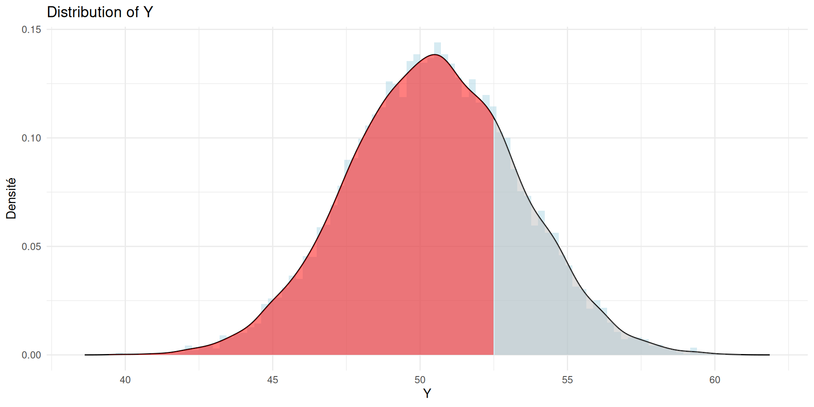
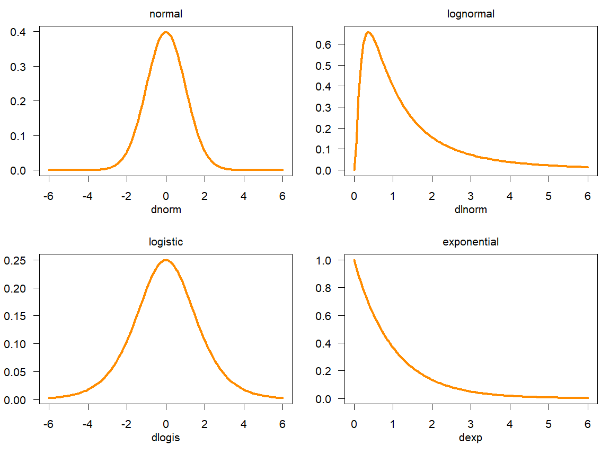
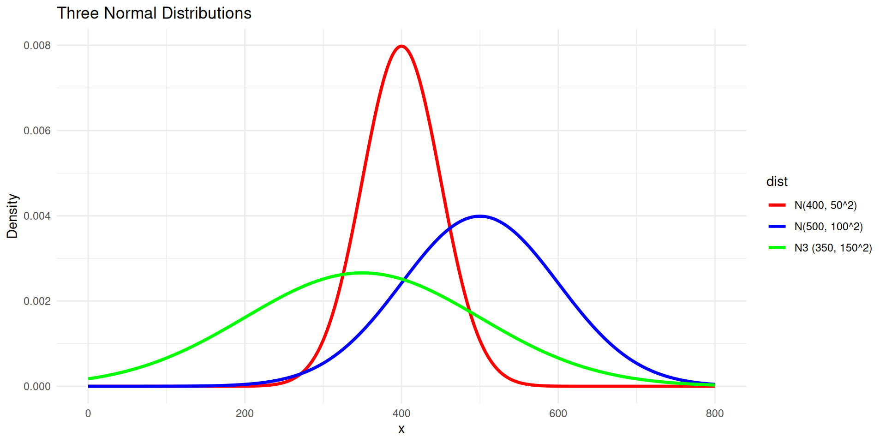
\[\begin{equation} \mathcal{N}(x; 1.5, 1) \end{equation}\]
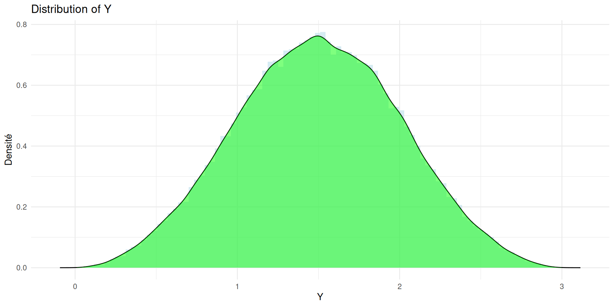
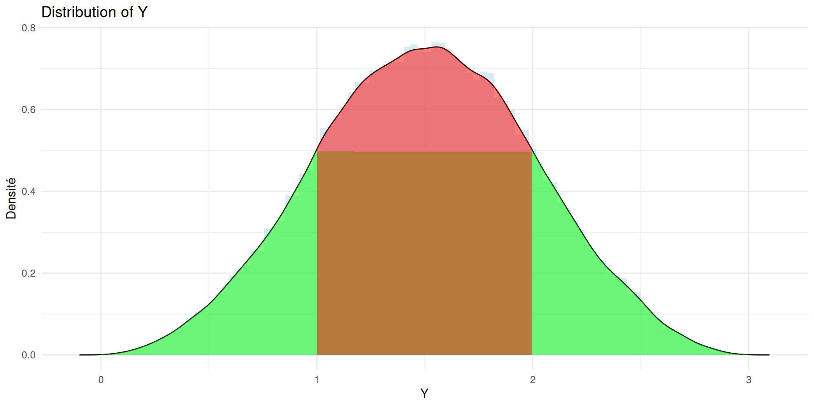
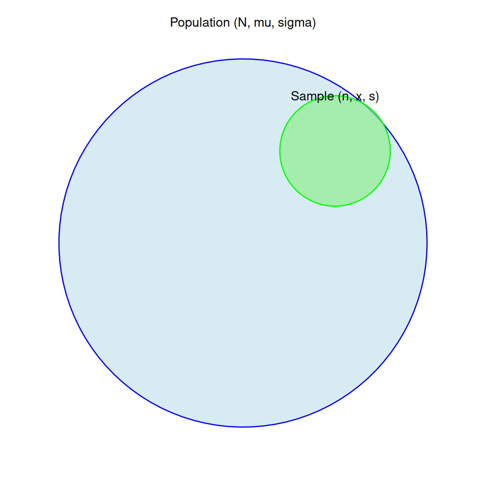
Population and Sample
\[\begin{equation} \bar{x} - z_{1-\alpha/2}\,\frac{\sigma}{\sqrt{n}} \le \mu \le \bar{x} + z_{1-\alpha/2}\,\frac{\sigma}{\sqrt{n}} \end{equation}\]
\[\begin{equation} \bar{x} - z_{1-\alpha/2}\,\frac{\sigma}{\sqrt{n}} \le \mu \le \bar{x} + z_{1-\alpha/2}\,\frac{\sigma}{\sqrt{n}} \end{equation}\]
[1] 0.235635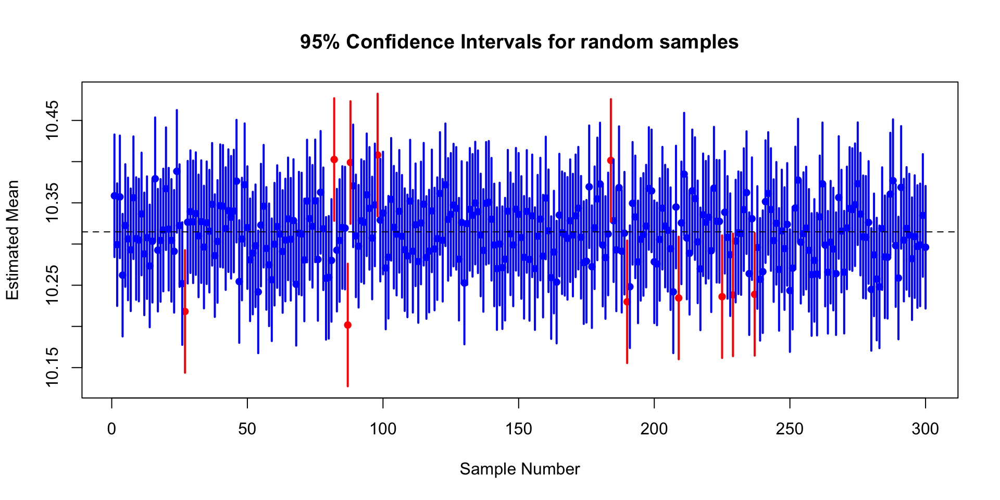
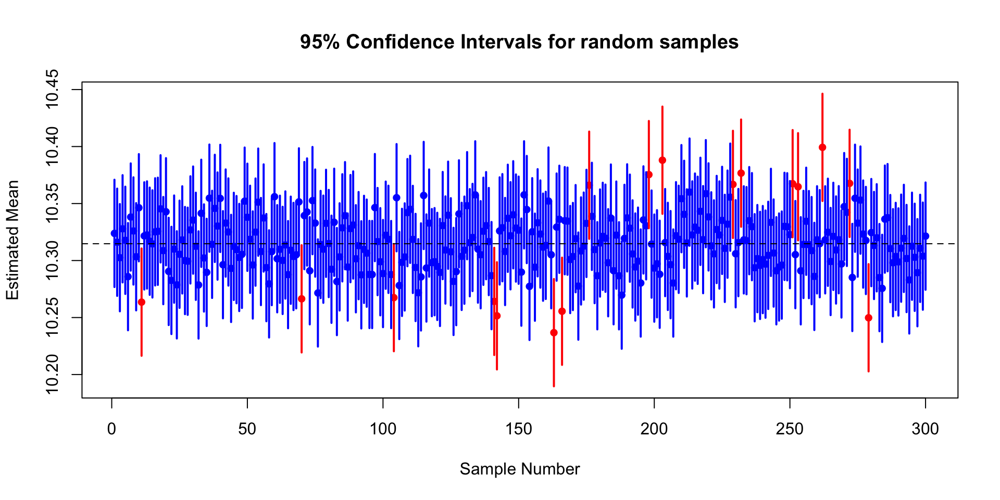
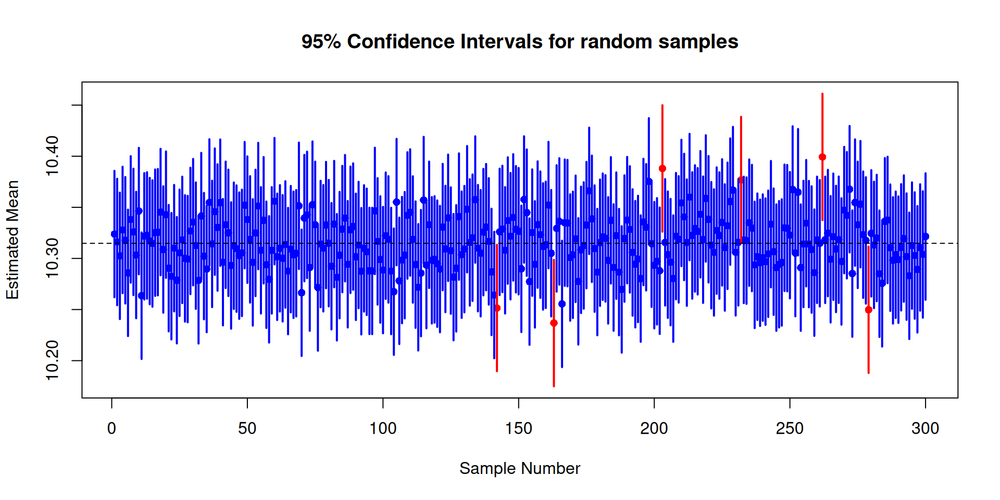
\[\begin{equation} \bar{x} \pm t_{1-\alpha/2,n-1}\,\frac{s}{\sqrt{n}}. \end{equation}\]
One Sample t-test
data: sample_data
t = -10.386, df = 149, p-value < 2.2e-16
alternative hypothesis: true mean is not equal to 10.4631
95 percent confidence interval:
10.25798 10.32356
sample estimates:
mean of x
10.29077 # Split data by urban and rural communes
urban_income <- sample(log((data_dem %>% filter(dens == "Urbain dense" | dens == "Urbain intermédiaire"))$revmoyfoy), 150, replace = FALSE)
rural_income <- sample(log((data_dem %>% filter(dens == "Rural"))$revmoyfoy), 150, replace = FALSE)
# Perform a two-sample t-test
t_test_urban_rural <- t.test(urban_income,
rural_income,
alternative = "two.sided",
var.equal = FALSE,
conf.level = 0.95)
# Display the result
t_test_urban_rural
Welch Two Sample t-test
data: urban_income and rural_income
t = 3.9075, df = 292.75, p-value = 0.0001159
alternative hypothesis: true difference in means is not equal to 0
95 percent confidence interval:
0.05493876 0.16644186
sample estimates:
mean of x mean of y
10.44437 10.33368 t.test() allows you to analyse :
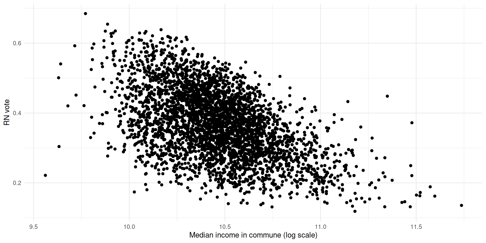
lmsummary gives you the values
Call:
lm(formula = far_right_relvotes ~ log(revmoyfoy), data = elec_urbin)
Residuals:
Min 1Q Median 3Q Max
-0.312869 -0.059556 0.000578 0.061612 0.245735
Coefficients:
Estimate Std. Error t value Pr(>|t|)
(Intercept) 2.310232 0.054997 42.01 <2e-16 ***
log(revmoyfoy) -0.185713 0.005257 -35.33 <2e-16 ***
---
Signif. codes: 0 '***' 0.001 '**' 0.01 '*' 0.05 '.' 0.1 ' ' 1
Residual standard error: 0.08438 on 3490 degrees of freedom
Multiple R-squared: 0.2634, Adjusted R-squared: 0.2632
F-statistic: 1248 on 1 and 3490 DF, p-value: < 2.2e-16
Call:
lm(formula = far_right_relvotes ~ log(revmoyfoy) + psup, data = elec_urbin %>%
filter(dens == "Urbain intermédiaire"))
Residuals:
Min 1Q Median 3Q Max
-0.30604 -0.05640 -0.00183 0.05605 0.35688
Coefficients:
Estimate Std. Error t value Pr(>|t|)
(Intercept) 1.663218 0.059892 27.77 <2e-16 ***
log(revmoyfoy) -0.116205 0.005913 -19.65 <2e-16 ***
psup -0.112047 0.005232 -21.41 <2e-16 ***
---
Signif. codes: 0 '***' 0.001 '**' 0.01 '*' 0.05 '.' 0.1 ' ' 1
Residual standard error: 0.07934 on 3489 degrees of freedom
Multiple R-squared: 0.349, Adjusted R-squared: 0.3486
F-statistic: 935.1 on 2 and 3489 DF, p-value: < 2.2e-16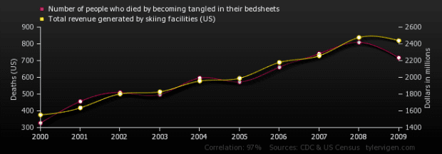
In this exercise, we are interested in understanding what explains trust in parliament (trstprl). The main factors considered are Education level (eduyrs), Political interest (polintr), Media Use (tvtot, netusoft);
The Chapel Hill expert survey data is a survey that “provides information about the positioning of the leadership of 279 parties in 31 countries over the course of 2024 on ideology, policy, populism, democracy, European integration, and select EU policy questions. Country coverage includes all European Union member states except for Luxembourg – plus Iceland, Norway, Switzerland, Turkey, and the United Kingdom.2 The dataset adopts the country code and party id schema of the CHES Trend file (Jolly et al. 2022) and the Speed CHES survey on Ukraine (Hooghe et al. 2024) with extensions for newly covered parties” (see documentation of CHES).
You are provided with data about the legislative and the presidential elections in France, in 2022, as well as socio-demographic data on French communes in 2022, for LR (coded as “right”) and RN (“far-right”).
Session 2 - Relationships between variables